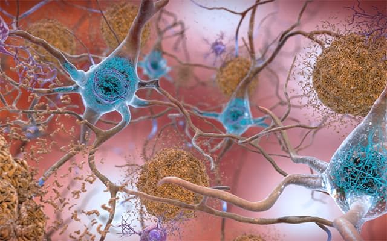

Kenneth Nguyen
Email: kdn@usc.edu
Phone: (714) 273-0344
Objective
This resume exists to showcase the education, experience, and skills that I've gained throughout my academic career. I do so in the hopes that you view any of my qualifications as a potential investment for your company or organization's mission.
Education
August 2021-May 2025
University of Southern California
Unweighted GPA 4.00
B.S. in Quantitative Biology, Minors in Health Care Studies/Connected Devices and Making, and Specialization in Artificial Intelligence and Applications
COMPASS Scholar, QBIO Honors Program, Keck PREP Scholar
Experience
May 2022-Present
Machine Learning Quantification of AD Pathology within Human Post-mortem Tissue
Undergraduate Researcher in Dr. Michael Bienkowski’s Lab
- Analyzing hippocampal slice images from deceased Alzheimer's patients using machine learning, image analysis software, and other computational methods to study molecular precursors in different hippocampal regions for Alzheimer’s disease at the USC Mark and Mary Stevens Neuroimaging and Informatics Institute
May 2022-August 2022
Covered California Healthcare Coverage Analysis
Undergraduate Researcher in Dr. Glenn Melnick’s Lab
- Analyzed healthcare plans for different family compositions, family incomes, and locations in order to spread awareness of health coverage specifics and highlight health insurance coverage disparities at the USC Price Center for Health Financing, Policy, and Management
February 2022-Present (164.5 hours)
USC Trojan Health Volunteers/Crisis Text Line
Crisis Counselor
- Providing crisis intervention for Crisis Text Line and 988 hotline users during high-volume, late-night shift hours as a part of the Trojan Health Volunteers organization
- Applying good contact techniques and empathy in order to support users dealing with suicidal thoughts, self-harm, physical/sexual abuse, depression, loneliness, stress, grief, family issues, and more
- Actively working with high-risk texters to prevent them from ending their lives
September 2022-Present (267 hours)
Los Angeles General Medical Center
Cardiothoracic ICU/Emergency/Orthopedics/Pediatrics Volunteer
- Resupplying rooms, preparing beds for patients, providing patients with food/drinks, transporting disabled/gurney-bound patients around hospital, and escorting visitors to see their injured loved ones
September 2021-Present (192 hours)
USC Scholars Leading Scholars
Curriculum Committee Member, Mentor
- Mentoring juniors and seniors from disadvantaged high schools near USC by providing foundational knowledge about financial aid, college options, academic/social fit, and other important topics
- Developing worksheets and presentations for other mentors to use when working with their mentees
December 2021-June 2023 (105 hours)
Matriculate
Advising Fellow
- Mentoring low-income, socioeconomically-disadvantaged high school students during regular one-on-one meetings to support them through the college admissions process
- Providing students with the knowledge and resources to apply to good-fit, high graduation rate colleges that meet their financial need
September 2022-Present
Keck PREP Tutoring
Tutor
- Tutoring Chem 102, Chem 105a/b, and Chem 115a/b courses for disadvantaged first-generation/low-income pre-medicine USC students in the Keck PREP Scholars program
- Providing smaller-cohort instruction for students who need more personalized teaching or don’t have Supplemental Instruction for their classes
February 2022-Present
USC MEDesign
Design Team Member
- Developing optimized HFCWO vests for cystic fibrosis to increase comfort of the airway clearance procedure and improve patients’ therapy adherence
- Previously created affordable, adjustable, and durable lower-limb prosthetics for growing children in low-income areas as part of the student-led medical device design team AdaProsthetics and presented at the university-wide MEDesign Symposium

Skills
- Computer Science: Python, C++, R, SPSS (including Syntax), Bash
- Software/Programs: Microsoft Word, Microsoft Excel, SPSS Statistics, RStudio, Quantitative Imaging Toolkit (QIT), Ilastik
- Laboratory: Cell culturing, Bacteriophage culturing, Aseptic technique, DNA analysis
- Clinical: CPR (BLS)
- Languages: English (fluent), Spanish (conversational)